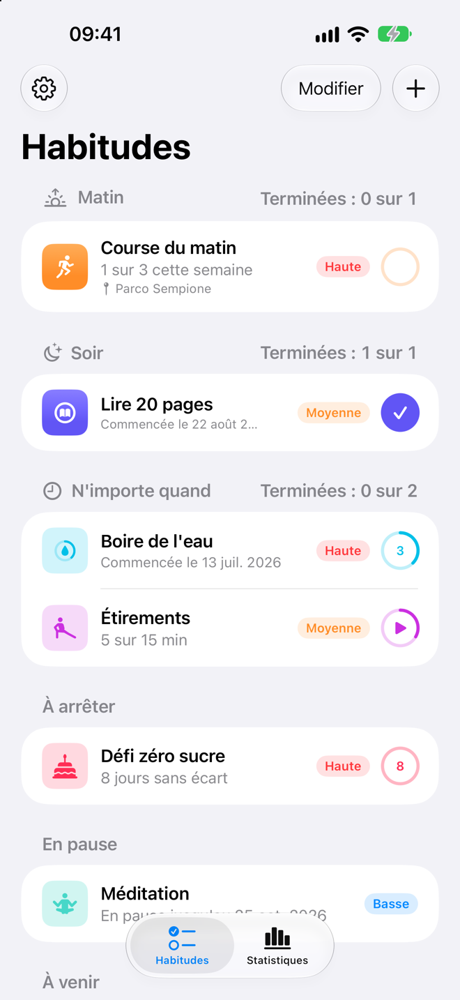
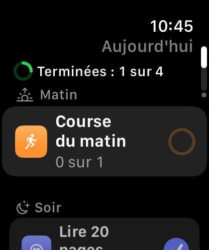
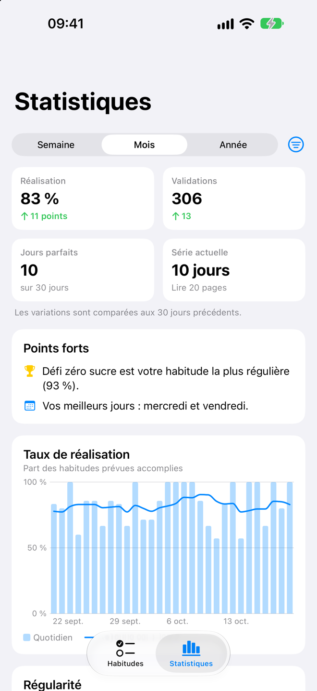
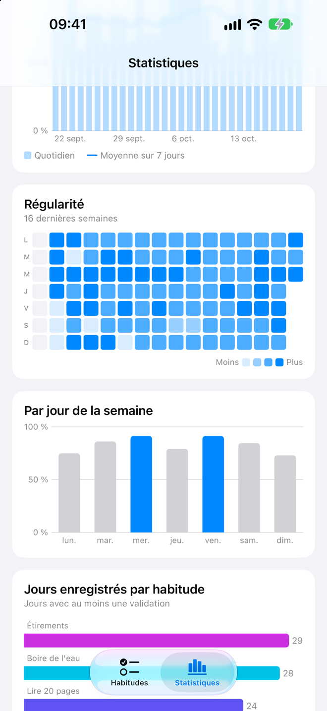
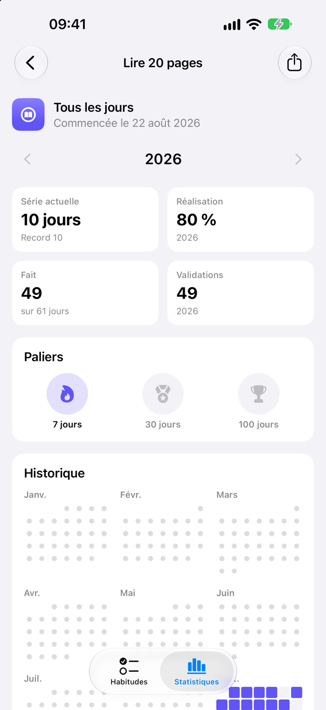
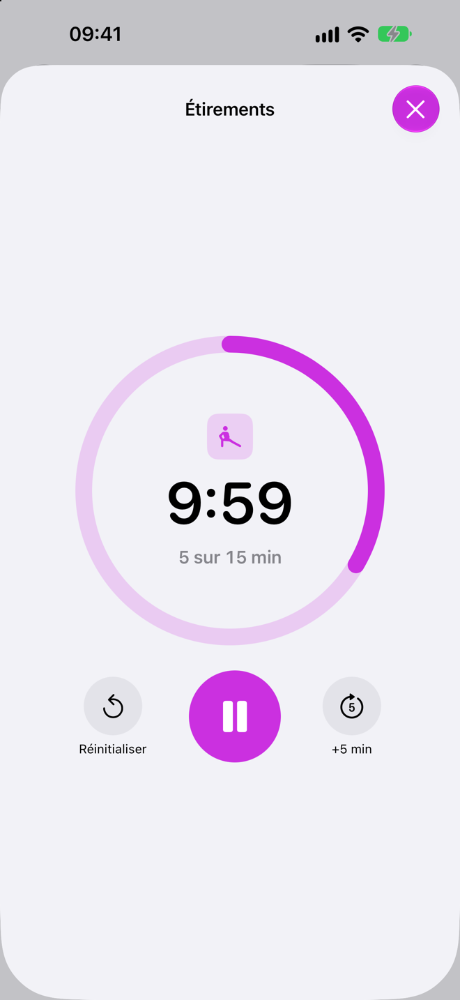
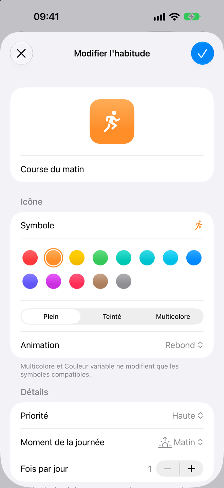
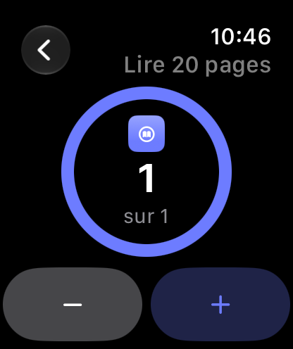

Des habitudes à votre façon
Choisissez une icône, une couleur et une animation. Répétez certains jours de la semaine ou 3 fois par semaine, n'importe quels jours, une fois par jour ou plusieurs, comme 8 verres d'eau.
Validez chaque jour, recevez un petit rappel quand il le faut, et regardez vos séries grandir. Un suivi d'habitudes simple et respectueux de votre vie privée pour iPhone, iPad, Mac et Apple Watch.
Bientôt sur l'App Store.


Suivez les habitudes que vous voulez prendre et celles que vous voulez arrêter, à votre façon.
Choisissez une icône, une couleur et une animation. Répétez certains jours de la semaine ou 3 fois par semaine, n'importe quels jours, une fois par jour ou plusieurs, comme 8 verres d'eau.
Organisez votre journée en Matin, Après-midi et Soir, et faites glisser vos habitudes dans l'ordre de votre choix.
Pour les habitudes mesurées en minutes, comme lire 30 minutes par jour. Lancez et mettez en pause depuis la liste ou votre poignet, et recevez une notification une fois terminé.
Tabac, sucre, écrans tard le soir : comptez les jours sans écart depuis le dernier.
Un par jour, ou répartis dans la journée (« 3 sur 8 »), avec les boutons Fait et Valider directement dans la notification.
Ignorez un jour de maladie, mettez une habitude en pause, ou toutes pendant les vacances, sans casser vos séries.
Taux de réalisation, séries, une carte de régularité, vos meilleurs jours de la semaine et un calendrier de l'année pour chaque habitude.
Fêtez les séries de 7, 30 et 100 jours, et partagez une série sous forme d'image.
« Valider Course du matin dans HabitTracker », ou demandez « Ce qu'il me reste aujourd'hui dans HabitTracker ». Fonctionne aussi dans Spotlight et avec le bouton Action.
Vos habitudes dans une barre latérale, avec les statistiques de chacune à côté, et des raccourcis clavier sur le Mac.
Exportez tout en CSV pour un tableur, et sauvegardez et restaurez via l'app Fichiers.
Six icônes d'app, et l'app en English, Italiano, Français ou Español, quelle que soit la langue de votre appareil.
Conçue pour iOS 26, avec Liquid Glass, retours haptiques et VoiceOver partout.





Faites défiler sur le côté pour en voir plus.
L'app pour Apple Watch affiche les habitudes du jour et se synchronise avec votre iPhone, pour valider sans sortir votre téléphone.

HabitTracker ne collecte aucune donnée. Ce que vous suivez reste entre vous et vos appareils.
Ouvrez l'app et commencez. Il n'y a rien à créer.
Pas de publicité, pas d'analyse et aucun code tiers.
Vos habitudes restent sur votre appareil, et l'Apple Watch se synchronise directement avec votre iPhone.
Une question, une idée, ou quelque chose qui ne fonctionne pas comme prévu ? Envoyez-nous un e-mail et nous vous répondrons.
C'est presque prêt : une bêta sur TestFlight d'abord, puis l'App Store. Cette page y mènera dès sa sortie.
iPhone et iPad avec iOS 26 ou ultérieur, Mac avec macOS 26 ou ultérieur, et Apple Watch avec watchOS 26 ou ultérieur, jumelée à un iPhone.
Oui : Réglages › Assistance › Contacter l'assistance prépare un e-mail avec des détails qui nous aident à trouver un problème, comme la version de l'app, votre appareil et la version d'iOS. Il n'inclut jamais les noms, notes ou lieux de vos habitudes, et vous voyez tout avant de l'envoyer.
Dans Réglages › Sauvegarde, choisissez Sauvegarder dans Fichiers et enregistrez le fichier à un endroit accessible depuis le nouvel iPhone, comme iCloud Drive. Puis, sur le nouvel iPhone, choisissez Restaurer une sauvegarde.
Oui. Balayez une habitude et choisissez Ignorer aujourd'hui, activez En pause en modifiant une habitude, ou utilisez Réglages › Vacances pour toutes les mettre en pause. Les jours en pause ne comptent jamais comme manqués.